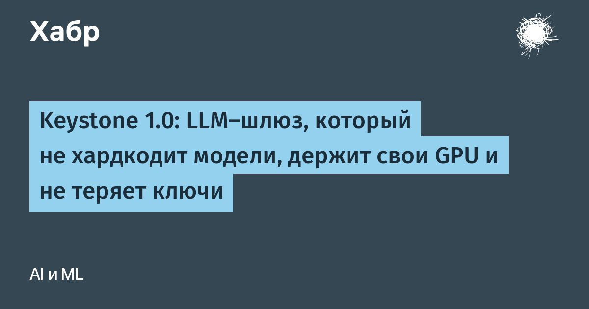

Keystone 1.0: LLM-шлюз, который не хардкодит модели, держит свои GPU и не теряет ключи
Имя модели в коде устаревает в день выхода следующей модели.
Если у вас десять сервисов, вы перепишете его десять раз и десять раз разнесёте по конфигам ключи вендоров.Keystone.
The Model Switchboard.
(KTMS) убирает это из кода.
Сервис говорит, насколько сложна задача, а шлюз решает, какую модель позвать, с каким ключом и не отдать ли запрос вашей собственной GPU.
В простое он занимает 7 МиБ памяти, а с версии 1.0 его API в пределах 1.x не ломается.Вместе со шлюзом 1.0 вышли веб-консоль ktms-admin и учёт расходов light-tokenmeter, все три на Go и под Apache 2.0.
Возможности ниже описаны по актуальной версии 1.3.
Читать далее